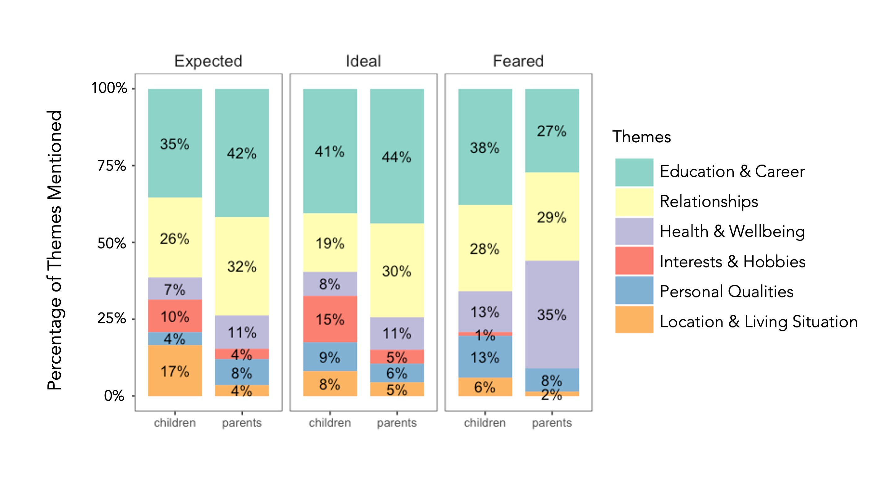

While we can always learn more from our interviewees' rich answers, here are some of our insights so far:
1) Our research team coded the interviews according to several themes that interviewees mentioned when they were talking about the futures they envisioned. Both generations placed value on a good career and strong relationships in the children's futures. Here is a breakdown of the themes they mentioned. Note that each answer to a question may contain more than one theme.
2) However, upon taking a closer look, we found that the generations often diverged in the specific ways they envisioned these broad themes manifesting in the children’s lives. For example, parents associated a good career with stability, such as a reliable income and work-life balance, while children often associated a good career with personal growth and helping others. One parent highlights this generational difference:
"I hope he has a relatively stable [job]... a very stable set income. But I think that kids growing up here, their thoughts as the second generation seem to be very different. They seem to care about their contribution to society."
3) Many interviewees reflected on the ways their cultural, ethnic, and racial identities, social class, immigration experiences, family histories, and education shaped their viewpoints. Among them, one parent pointed out that the rigidity of her education in China, while beneficial in some ways, also made her want her daughter to find her own voice more:
"I was born and grew up in China, so our education was very test-based... we didn't have any say in the process. We just had math club, chemistry club, everything academic-based, so we weren't that well-rounded. In class, you didn't even need to make any noise, only listen to the teacher and finish all the work. Our personal opinion was not encouraged. But that gave us a very solid academic foundation. Part of the reason we brought our girls back to China for a few years is that we wanted to give them some basic training, so they'll know about this style and where I am coming from. But now, they are already grown up. I think it's time to balance out, so I hope they have more of an opinion, raise their voices more. You have to contribute and cultivate your own thinking, otherwise it's very easy to be manipulated... My utmost hope is for her to find her own voice, because when you find your own voice, then you will find happiness."
Another parent commented on the challenges of growing up Asian in America and expressed concerns about the racism her daughter has faced and may continue to face in the future:
"Right now with the Coronavirus hate against Asians... all those racial stuff I'm worried about. Kids who grow up here look Asian, but actually they are American. All their values, all their thinking processes, everything is Americanized, but people just look at their skin color and think they're not American and treat them differently. So they will be confused, thinking, "Why do you treat me like this when I am American?" My older daughter was in the parking lot and a person just shouted at her, "Coronavirus!" And she was shocked. That was her first experience with racism. That's something we discuss among my friends a lot. Is it a safe environment for our kids anymore? Should they move back to Asia? Should we keep all the connections in Asia still? Maybe some day they will have to use it. So the feeling that this country is not their country anymore, it frightens me. So I think for their generation, they should seek more political influence."
One child recognized that her mother expresses love through actions instead of the verbal I love you common in American culture, and she has tried to reciprocate:
"I was meeting people during the first day of college, and when I came back to my dorm, my mom had unpacked all of my clothes, my furniture, my things, and put it into my dorm, so I didn't have to set up my dorm by myself at all. Little things like that began to become more prevalent. I think it was maturity on my side more than it was an addition of kind acts that she did. Because I think my entire life, she's always done little things, like she'll cut fruit — it's the epitome of an immigrant parent showing love... As I grew older, I started to see more of that and look for it. And so then, because of that, I have become more comfortable with being transparent about my boyfriend, for instance, or the trips that I'm going on. I don't lie to her as much anymore."
These intersectional reflections remind us that families do not exist in vaccuums; they exist in the larger context of their societies and cultures. Moreover, members of both generations are aware of — and intentional about — the ways they interact with the social forces around them.
Personal Limitations and Intentions
That said, I hesitate to draw sweeping conclusions, both because I still have a lot to learn as a researcher, and because our community — even just the Chinese American immigrant community — is so diverse. Rather, my hope is that people can use this website to glimpse some of the nuanced, complex family experiences in our community – and perhaps to find their own experiences reflected in some of them.
for inquiries, contact ayang22@stanford.edu.